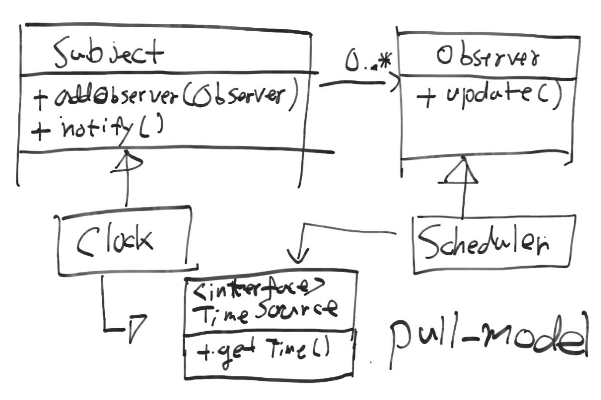
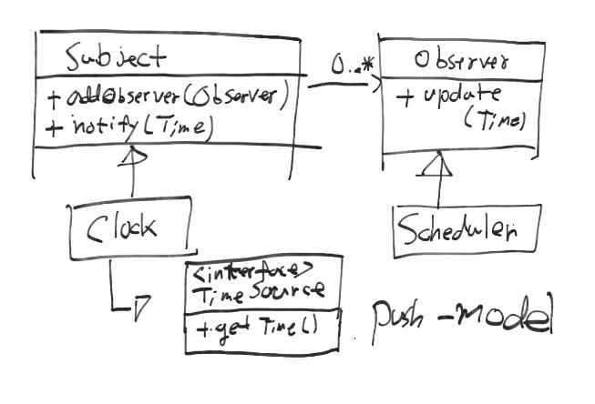

2. 디자인 패턴¶
디자인 패턴 의 종류는 다음과 같다.
2.1. 전략 패턴¶
전략 패턴 이란 클래스의 여러가지 동작을 표현하기 위해 다양한 종류의 클래스를 상속하지 않고 전략 인터페이스에만 의존하여 전략을 선택할 수 있는 디자인 기법이다. 알고리즘을 독립시키는 패턴을 뜻한다. 전략 패턴은 객체의 다형성을 이용하여 코드의 중복없이 알고리즘을 재사용할 수 있게 한다.
예를들어 인턴, 대리, 부장이라는 Employee를 상속받은 객체가 있고 각 객체에 다른 월급을 주고 싶을때 전략 패턴이 사용된다. 이때 Salary라는 인터페이스를 연관(Association) 시킨 후 Salary를 상속 받은 Salty, Generous중 하나를 주입하는 것이다. 각 클래스의 의미는 Salty는 적은 월급 Generous는 일반적인 월급이라고 할 수 있다. 이는 전략을 주입하는것과 비슷하다.
이처럼 조건에 따라 다른 전략을 사용하고 싶을때 사용하는 패턴이다. 참고

2.2. MVC 패턴¶
프로그램을 크게 Model, View, Controller 구성요소로 나누는 패턴이다.
- Model은 데이터를 수정하거나 어떤 동작을 수행할 수 있다.
- View는 Model에서 데이터를 읽어와서 사용자에게 보여준다.
- Controller는 사용자의 요청을 처리하기위해 Model의 상태를 바꾼다.
이외에도 Service 계층을 두고 1개 이상의 모델과 함께 특정 작업을 처리하기도 한다.
2.3. ISP(Interface Segregation Principle)¶
인터페이스 분리 원칙은 자신의 서브 클래스 때문에 원치 않은 상속과 사용하지 않는 메소드에 강제로 의존하지 않아야 한다는 원칙이다. 이는 인터페이스를 분리하고 다중 상속이나, Adapter를 통해 분리된 인터페이스의 서브 클래스간 통신을 하게하여 해결할 수 있다.
그 예제로 Door, Timer 문제나 Shape, TextShape, TextView 문제가 있다.
2.4. DIP(Dependency Inversion Principle)¶
의존성 역전 원칙은 전통적으로 사용되는 저수준 모듈에 대한 의존성을 제거하고 추상 클래스나 인터페이스에 의존성을 갖도록 하는 원칙이다. 이는 저수준 모듈과의 결합을 줄여서 저수준 모듈이 변경되어도 크게 영향을 받지 않으며, 도메인, 사용자 요구에 맞는 일관성 있는 메서드 사용을 유도할 수 있다.
Robert Martin는 처음 DIP를 Open Closed Principle과 Liskov Substitution Principle를 합한 개념이라고 설명하였다.
2.5. IOC(Inversion of Control)¶
제어의 역전은 프로그래머가 작성한 코드를 작성한 코드 내에서 직접 제어하는 것이 아닌 프레임워크가 제어하도록 하는 원칙이다. 프레임워크가 확장성을 갖는 프로그램 뼈대가 될 수 있게 도와준다. 프레임워크의 기본 특징 중 하나이다.
일반적으로 프래임워크는 특정 구현체를 생성하고 프로그램에 주입하는 역할을 하기도 한다. 이때 IOC 패턴을 DI 라는 이름으로 부르기도 한다.
Hollywood's Law의 Don't call us, we'll call you는 IOC의 특징을 잘 설명한다.
2.6. DI(Dependency injection)¶
의존성 주입은 객체에서 의존하는 객체 생성에 대한 관심을 분리하고 외부에서 의존성을 주입하는 패턴을 뜻한다. 직접 의존성 객체를 생성 및 주입하는 것은 복잡하고, 오류가 발생하기 쉽고, 테스트하기 어렵게 한다. 반면, IOC컨테이너를 통해 의존성을 주입할 경우 특정 클래스에 대한 의존성을 제거할 수 있다. 이는 애플리케이션이 실행되는 다양한 환경에 유연하게 대처할 수 있게 도움을 준다.
DI 방법은 크게 3가지가 있다. 인터페이스를 이용하여 주입하거나, 생성자나 setter를 이용하여 주입하는 방법이다. IOC 컨테이너는 대표적으로 Spring, Guice 같은 프레임워크가 있다.
단순하게 생각해도 아래의 Consumer 클래스를 선언할때, 그 객체의 의존성을 생성해야하고 의존성의 의존성 객체도 생성해야한다. 사용하기 너무 불편하다. 객체의 라이프 타임도 관리가 안된다.:
class D{
}
class C{
D d;
public C(D d){
this.d = d;
}
}
class B{
C c;
public A(C c){
this.c = c;
}
}
class A{
B b;
public A(B b){
this.b = b;
}
...
}
class Consumer{
void consume(){
C c = new C(new D())
B b = new B(c);
A a = new A(b);
a.use();
}
}
DI 패턴은 아예 클래스 내부에서 객체를 생성하는 Compile-time dependency를 사용하거나, 주입할 스태틱 객체를 갖는 팩토리 클래스를 만드는 패턴을 대체한다. DI와 유사한 패턴으로는 Service Locator 패턴이 있다.
2.7. Service Locator¶
DI과 비슷한 용도로 사용되며 일반적으로 서비스 객체를 검색하는데 사용하는 Registry 객체이다. 객체를 주입 받으려면 DI 패턴과 달리 Locator 객체에 의존성을 가져야 한다. 여러가지 방식으로 구현 가능하다. 서비스 객체를 제공하는 메서드를 구현하거나, 기능별 인터페이스를 구현하는 방법과 문자열과 같은 키값을 주어 동적으로 원하는 객체를 가져오는 방법이 있다.
2.8. DI vs Service Locator¶
2.8.1. DI 장점¶
쉽게 테스트 구현체를 주입할 수 있다. 객체에 어떤 의존성이 있는지 쉽게 확인할 수 있다. 인터페이스, 메서드, 생성자와 같은 DI 매커니즘을 통해 쉽게 확인 가능하다.
2.8.2. DI 단점¶
DI는 IOC 개념을 사용하기 때문에 직관적이지 않고 디버깅을 통해 문제를 분석하기 어려운 경우가 있다. 한번 의존성이 구성되면 추가적인 서비스 객체를 가져올 수 없다.
2.8.3. Service Locator 장점¶
쉽게 테스트 구현체를 등록할 수 있다. 코드 호출을 통해 직관적이고 명시적으로 객체를 얻어올 수 있다.
2.8.4. Service Locator 단점¶
Locator 객체에 의존성을 가져야 하기 때문에 상황에 따라 단점이 될 수 있다. 또한 의존성을 확인하기 위해 Locator의 메서드를 호출하는 소스코드를 찾아야 하는 번거로움이 있다.
다른 사람이 만드는 애플리케이션에서 고유의 Locator를 사용하고 있고 동시에 내가 만든 Locator에 의존하는 클래스를 사용하려 한다면 Adapter로 두개의 Locator 연결해야한다. 이는 Locator의 단숨함을 해칠 수 있다.
2.9. 위임 패턴¶
다른 객체에 일을 위임하는 설계 패턴을 뜻한다. 안드로이드에서 터치이벤트를 처리하기 위해 버튼의 구체적인 역할을 OnClickListener에 위임하였다.
2.10. 퍼사드 패턴¶
복잡하고 일반적인 모듈에 대한 간단하고 구체적인 인터페이스를 제공할때 주로 사용한다. 이 패턴은 정책을 높은 수준에 적용한다. 또한 이 패턴은 개발자에게 간단한 인터페이스를 사용하라고 강제한다. 사용자 입장에서는 복잡한 인터페이스는 퍼사드에 의해 완벽하게 가려지며 보이지 않게 된다.
예를들어 java.sql 패키지 같은 경우 다양한 클래스로 구성되어 있으며 사용 방법이 복잡하다. 이를 조작하는 DB 클래스를 제공하여 문제를 간단하게 만들 수 있다.
2.11. 미디에이터 패턴¶
어떠한 정책을 낮은 수준의 모듈부터 적용하는 패턴이다. 퍼사드 패턴과 달리 강제적이지 않은 방식으로 정책을 적용한다.
예를들어 스마트폰에서 A라는 모듈에 새로운 메세지가 왔을때 B라는 모듈에 알림이 나타나도록 정책을 적용할 수 있다. 이러한 정책은 선택 가능하다.
2.12. 팩토리 패턴¶
객체를 사용하는 측에서 사용하려는 클래스의 인터페이스만 정의하며 실제로 어떤 객체를 생성할지 구체적인 팩토리에 맡기는 패턴이다. 예를들어 워드에서 특별한 형식의 문서를 만들때 그 타입만 넘겨주면 타입에 관련된 구체적인 클래스를 반환한다.
장점
- 단지 인터페이스만 알고 있으면 되기 때문에 클래스와의 강결합을 줄여준다. 어플리케이션과 구체적인 클래스를 분리시킨다. 팩토리 패턴을 적용하면 생성될 객체의 클래스를 수정하여도 상위 모듈의 재컴파일이 필요하지 않다.
- 프로젝트 초기에 클래스가 자주 수정될 경우 사용하기 좋다.
- 구체적인 팩토리를 여러개 만들어서 용도에 맞게 사용할 수 있다.
단점 (사용하기 안좋은 경우)
- 생성하려는 클래스의 종류가 부모를 상속하는 형태가 아니라면 굳이 쓸필요가 없는 패턴이다.
- 확장이 아닌 결합도를 줄이기 위해 사용하는 패턴이다.
2.13. 어댑터 패턴(Adapter Pattern)¶
사용자가 요구하는 인터페이스를 위해 기존 소스코드를 수정하지 않고 사용하고 싶을때, 또는 아예 소스코드가 없을때 어댑터(Adapter)를 이용해 함께 동작하게끔 하는 디자인 패턴이다. 이때 호환성이 없는 객체는 Adaptee라 불린다.
예를들어 상위 수준 정책이 의존하는 추상 인터페이스를 어댑터가 구현하게하고 내부적으로 다른 호환성이 없는 인터페이스(Adaptee)를 사용하게 한다.
2.14. 템플릿 메서드 패턴¶
부모 클래스에서 메서드 호출의 흐름을 제어하고 자식 클래스에서 구체적인 내용을 작성하는 패턴이다. 예를들어 HTML문서를 생성할때 템플릿 메서드를 활용하면 좋다. 템플릿 메서드에서 head, body 등의 필요한 태그를 생성하는 함수를 이용해 흐름을 작성한다.
장점
- 템플릿을 통해 코드의 중복을 줄인다.
- 템플릿 메서드를 이용해 리팩토링이 쉽다.
2.15. 옵저버 패턴¶
다른 객체의 변화를 관찰하는 패턴이다. OCP, LSP, DIP 등 3가지 원칙을 만족 시키며 Subject와 Observer로 역할이 나뉘어진다. Subject는 추상 클래스로(구체화를 못 하도록) 다른 객체에 알림을 줄때 사용하는 클래스이며, Observer는 관찰하고 싶을때 사용하는 인터페이스이다.
동작하는 방식은 pull-model, push-model가 있다. pull-model은 observer에게 전달할 데이터의 종류가 간단할때, push-model은 복잡하거나 단순히 pull-model로는 가져올 수 없을때 사용한다.
 2.16. 참조¶
- DI Motivation: https://github.com/google/guice/wiki/Motivation
- DI: https://github.com/google/guice/wiki/GettingStarted
- IOC: https://martinfowler.com/bliki/InversionOfControl.html
- IOC, DI: https://martinfowler.com/articles/injection.html
- DIP: https://martinfowler.com/articles/dipInTheWild.html#YouMeanDependencyInversionRight